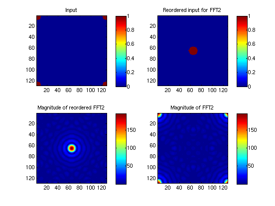
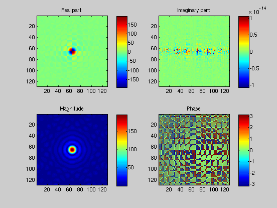

2D FFT demo3
Make a series of plots; hit return to step through
AH 2010.3.10
% A rectange at the center of the array A = zeros(128, 128); A = add_rect(A, 65, 10, 65, 20, 1); plot_fft2d(A) pause() % Add an off-center rectange A = add_rect(A, 80, 5, 90, 5, 2); plot_fft2d(A) pause() % A pair of points (points are hard to see on the plot) A = zeros(128, 128); A = add_point(A, 60, 65, 1); A = add_point(A, 70, 65, 1); plot_fft2d(A) pause() % A triple of points (points are hard to see on the plot) A = zeros(128, 128); A = add_point(A, 60, 65, 1); A = add_point(A, 70, 65, 1); A = add_point(A, 65, 80, 1); plot_fft2d(A) pause() % A circle at the center of the array A = zeros(128, 128); A = add_circ(A, 65, 65, 8, 1); plot_fft2d(A) pause() % A Gaussian at the center of the array A = zeros(128, 128); A = add_gaussian(A, 65, 65, 8, 1); plot_fft2d(A) pause() % A larger Gaussian at the center of the array A = zeros(128, 128); A = add_gaussian(A, 65, 65, 16, 1); plot_fft2d(A) pause() % A a pair of circles A = zeros(128, 128); A = add_circ(A, 65-20, 65, 8, 1); A = add_circ(A, 65+20, 65, 8, 1); plot_fft2d(A) pause() % A pair of circles, diagonal offset A = zeros(128, 128); A = add_circ(A, 65-14, 65-14, 8, 1); A = add_circ(A, 65+14, 65+14, 8, 1); plot_fft2d(A) pause() % Fill entire array to see where zero lag is A = zeros(16, 16)+1; plot_fft2d(A) pause() % Circle for the input to the fft A = zeros(128, 128); A = fftshift(add_circ(A, 65, 65, 8, 1)); plot_fft2d(A) pause() 